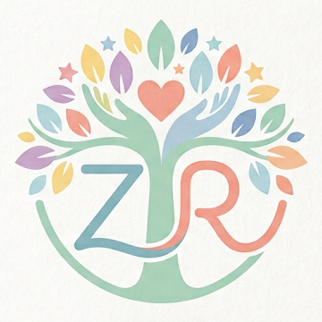

פענוח חכם של קובצי אבחון (PDF/טקסט), עיבוד תיאור חופשי ומאגר מטרות מותאם לגן ולבית הספר
קישור חד-פעמי להורים בנייד (WhatsApp) ותיעוד תצפיות מהיר של 10 שניות בכיתה ובגן
תל"א/תח"י, הערכת מחצית/סוף שנה ודו"ח מצב ב-Word/PDF/מייל + העתקה נקייה למנב"ס/משו"ב
שיוך מוביל/ת מטרה, מיזוג ענן ללא דריסות הדדיות, עבודה אופליין (PWA) וגלגול לשנה הבאה
אימות שרת מוצפן, פרוקסי AI מוגן, התנתקות יומית והמרה אוטומטית לראשי תיבות והשחרת PII
עבודה חלקה מכל מכשיר (גם ללא קליטת אינטרנט) – פחות שעות של עיצוב טבלאות, יותר זמן לעבודה חינוכית
ניסוח פדגוגי תקני מתיאור חופשי של המורה/הגננת או מתוך מסמכי אבחון מקצועיים:
מאגר מטרות ויעדים אופרטיביים המותאם אוטומטית לשלב החינוכי (גן ילדים או בית ספר):
תיעוד רציף מהשטח בסמארטפון או בטאבלט בתוך הגן והכיתה, גם במקלטים או בכיתות ללא קליטה:
שפה ארגונית ופדגוגית אחידה במתי"א – מתוכנית תל"א/תח"י, דרך הערכת מחצית/סוף שנה ועד דו"ח מצב והדבקה במנב"ס
מופקת במבנה אחיד, ברור ומכבד הכולל פרטי תלמיד/ה (מותאמים לגן או לבית ספר), קול ההורים, טבלת מוקדי כוח וטבלאות מטרות ב-6 עמודות:
הפרדה מובנית בין תוכנית התל"א לבין דוח הערכת מחצית / סוף שנה המוזן ממיקרו-תצפיות השטח:
הפקת דו"ח מצב מקיף (עד 15 סעיפים תקניים) לצד גשר העתקה מהיר למערכות משרד החינוך:
תכנון מובנה לשמירה על חיסיון רפואי ופדגוגי בענן, בהדפסה, בהעתקה למנב"ס, בקישור להורים ובניהול המשתמשים
כברירת מחדל, מצב "הסתר פרטים מזהים" מופעל בכל הפקת מסמך (PDF, Word, מייל וגשר ההעתקה למנב"ס):
המערכת פועלת על תשתית ענן מאובטחת (GitHub SSL/TLS + Google Cloud Functions) ומנוהלת ע"י מנהל/ת המתי"א:
חיבור ההורים לתהליך החינוכי, חלוקת אחריות ברורה בצוות ללא דריסת נתונים, ורצף פדגוגי משנה לשנה
שילוב אמיתי של ההורים בבניית התוכנית ושמירת היסטוריה מלאה לאורך שנות הלימודים (תשפ"ה–תש"צ):
עבודה מסונכרנת של גננת/מחנכת, מורת שילוב, מרפאה בעיסוק, קלינאית תקשורת, מנתחת התנהגות ומדריכת מתי"א:
השוואה בין תהליך העבודה המסורתי לבין עבודה במערכת TALA (גרסה v1.0.65)
| תחום | עבודה מסורתית בקבצים נפרדים | מערכת TALA – תוכנית עבודה אקולוגית |
|---|---|---|
| כתיבת תוכנית וקליטת אבחונים | שעות של הקלדה ידנית, העתקה מסיכומי אבחונים ועיצוב טבלאות שמתפרקות | קליטת אבחון חכמה ב-AI (PDF/טקסט), עיבוד מתיאור חופשי ומאגר מטרות דו-שלבי לגן ולבי"ס |
| תצפיות שטח ועבודה בנייד / אופליין | פתקים אבודים בגן/בכיתה ותלות במחשב נייח עם חיבור אינטרנט רציף | מיקרו-תצפיות של 10 שניות בנייד המזינות את ההערכות + עבודה רציפה גם ללא אינטרנט (Offline PWA) |
| 3 דוחות רשמיים וגשר למנב"ס/משו"ב | כתיבה ידנית מחדש של דו"ח מצב והעתקת טבלאות שמשתבשות במנב"סנט | 3 דוחות בלחיצה (תל"א, הערכה, דו"ח מצב) ב-Word/PDF/מייל + כפתור "📋 העתקה למנב"ס" בטקסט נקי |
| שותפות הורים וצוות רב-מקצועי | קושי באיסוף עמדת ההורים ודריסת קבצים הדדית בין גננת, מורת שילוב ומטפלים | קישור חד-פעמי ל"קול ההורים" בנייד, שיוך "מוביל/ת מטרה", ומיזוג ענן ברמת שדה ללא דריסות |
| אבטחת מידע, פרטיות ורצף רב-שנתי | מחיקה ידנית של שמות ות.ז (חשוף לטעויות) וחיפוש קבצים משנים קודמות | אימות שרת ופרוקסי AI, ראשי תיבות והשחרת PII אוטומטית, התנתקות יומית וגלגול חכם לשנה הבאה |